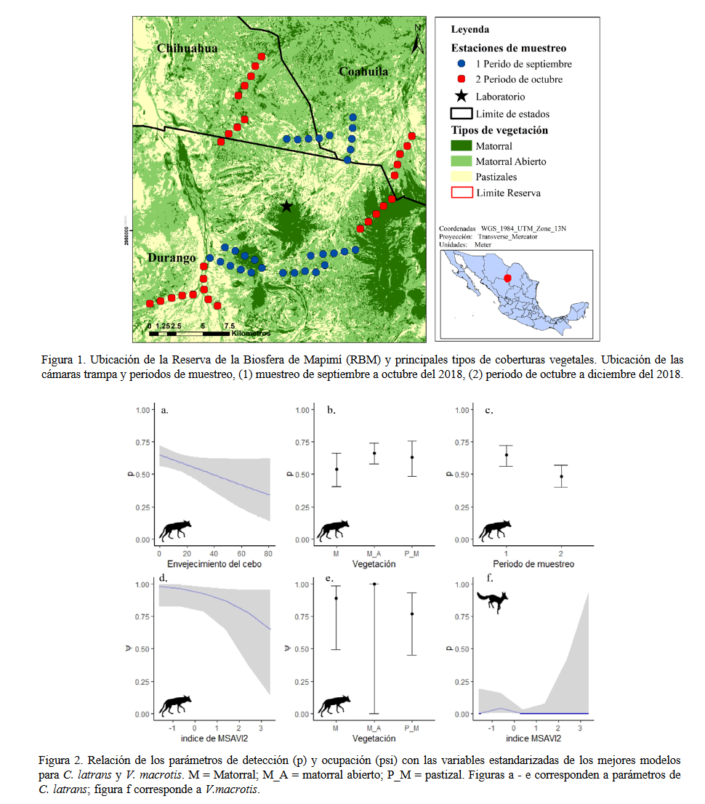

Andrade-Ponce, G. P., Gallina, S., Gómez-Valencia, B., & Lira-Noriega, A. (2020). Coexistencia de Vulpes macrotis y Canis latrans (Carnivora: Canidae) en la Reserva de la Biosfera de Mapimí, México

El coyote y la zorra del desierto son 2 cánidos que habitan en simpatría en las zonas áridas de Norteamérica, en donde se ha reportado que una de las principales causas de mortalidad de las zorras es la depredación por parte de los coyotes. Sin embargo, en el desierto chihuahuense no se ha reportado ningún evento de mortalidad y es poco lo que se conoce sobre la interacción de estas 2 especies. Por lo anterior, el objetivo del presente estudio fue analizar los patrones de coexistencia de ambos cánidos en la Reserva de la Biósfera de Mapimí (RBM), México. Para ello, se usaron modelos de ocupación de 1 y 2 especies, junto con covariables. Los resultados de los modelos de 2 especies indicaron que ambos cánidos cohabitaron de manera independiente, por lo que no se cumplió la segregación espacial esperada. Por el contrario, ambas especies fueron detectadas con mayor probabilidad en los mismos sitios. Es posible que las zorras adopten estrategias de vigilancia y evasión de depredación a una escala espacial fina, que junto con la disponibilidad de presas, les permiten estar presentes en los mismos sitios que los coyotes.
Coyote and kit fox are 2 canids that live in sympatry in the arid zones of North America, where it has been reported that one of the main causes of kit fox mortality is the predation by coyotes. However, no mortality event has been reported in the Chihuahuan Desert and little is known about the interaction of these 2 species. Therefore, the aim of this study is to analyze the co-occurrence patterns of both canids in the Biosphere Reserve of Mapimí (BRM), Mexico. For this reason, single and 2 species occupancy models were used, along with covariates. The results of the 2 species models indicate that both canids occur independently, so spatial segregation is not fulfilled. On the contrary, both species were more likely to be detected in the same sites. It is possible that fox adopt surveillance and evasion of predation strategies at a fine spatial scale, which together with the availability of prey allow it to coexist in low numbers at the same places as coyotes